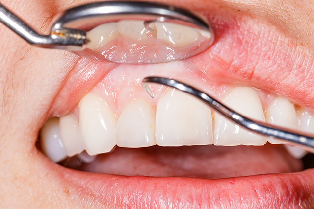

Perio歯周病
骨が溶けて歯が抜けてしまう前に～歯周病～

歯を失う原因はさまざまであり、虫歯や歯周病、ケガによる破折などが挙げられます。そのなかでももっとも多い原因は虫歯だと思われがちですが、実は日本の成人が歯を失う原因の第1位は歯周病です。
歯周病はごく初期の段階には自覚症状がないため、気づかないうちに進行していきます。また、高齢者がかかる病気だと思われがちですが、10代や20代の方であっても、初期症状が見られるほどまん延している病気です。歯周病は日本の成人の約8割が予備軍、またはすでに発症しているといわれています。
歯ぐきの腫れや歯ぐきからの出血が見られる場合には、歯周病にかかっているかもしれません。お口の異変に気づいたら、できるだけ早く千葉県南柏の歯医者「さかいね歯科クリニック」にご相談ください。
全身にも悪影響を与えます
悪化すると歯が抜ける可能性もある歯周病は、噛み合わせのバランスがくずれ、咀嚼（そしゃく）の機能が衰えるケースが心配されます。咀嚼（そしゃく）機能が衰えると、胃腸などの消化器官に大きな負担を与え、栄養補給も不十分になりがちです。ほかにも、全身の健康に悪影響を与えることが分かってきています。
| 糖尿病 | 肺炎 |
|---|---|
| 糖尿病と歯周病は密接につながっていることが分かってきました。糖尿病の患者さんは歯周病にかかっている率が高いうえ、歯周病の悪化が糖尿病の症状の悪化にもつながります。 | ご高齢の方は体の抵抗力が弱くなります。また、飲み込みの機能が低下していると、歯周病菌が気管に入って肺に到達し、炎症を起こす「誤嚥（ごえん）性肺炎」を引き起こしやすくなります。 |
| 心疾患 | 早産・低体重児出産 |
| 歯周病菌が血管内に入ってしまうと血栓ができやすくなり、動脈硬化や心筋梗塞、狭心症などの重篤な疾患を引き起こすリスクを高めてしまいます。 | 妊娠中に歯周病を悪化させてしまうと、歯周病菌や発生する毒素の作用によって子宮の筋肉が刺激を受け、早産や低体重児出産の確率を高めてしまいます。 |
もしかすると歯周病かもしれません
次のような症状が一つでもある方は、歯周病が疑われます。とくに複数の症状がある方は、さかいね歯科クリニックまですみやかにご相談ください。
- 肉から出血している
- 歯ぐきが腫れている
- 歯がぐらつく
- 歯がしみる
- く噛めない
- 歯肉の色が悪い
- 臭が強い
- 歯ぐきが下がり歯が長くなったように見える
- が浮いた感じがする
- 歯によく物が挟まるようになってきた
歯周病になりやすい人の特徴
歯周病は生活習慣病の一つです。また感染症でもあるため、免疫力が低くなると発症や進行を招きやすくなります。次のような生活習慣がある方は、歯周病を悪化させやすいため注意しましょう。
| 喫煙習慣がある | ストレスをためやすい |
|---|---|
| タバコの煙に含まれる有害物質は歯ぐきの血流を妨げ、免疫力を低下させます。 | 疲労などの原因でストレスがたまっていると、免疫力の低下につながります。 |
| あまり噛まない | 間食が多い |
| あまり噛まないと、口腔内の自浄作用が期待できる唾液の分泌量が減るため、細菌が繁殖しやすくなります。 | 口腔内に細菌が繁殖しやすい時間が長くなるため、歯垢（プラーク）がつきやすく虫歯や歯周病につながります。 |
症状別の治療法
※表は左右にスクロールして確認することができます。
| 進行段階 | ||
|---|---|---|
| 軽度歯周病 | 中等度歯周病 | 重度歯周病 |
| 症状 | ||
| 歯ぐきに軽い炎症が見られます。ブラッシングの際に出血するケースがあります。 | 歯を支える顎の骨が少し溶かされた状態です。歯ぐきの炎症や変色が進み、歯がぐらつき出します | 歯を支える顎の骨が大きく溶かされた状態です。歯がぐらついて口臭が強くなり、うみなどが出ます。 |
| おもな治療法 | ||
| ブラッシング指導 | ルートプレーニング | GTR |
歯垢を落とすことが、予防・治療の基本です。お口の状態に合わせたブラッシング方法をアドバイスします。 |
歯と歯ぐきの溝「歯周ポケット」の内部に付着する歯石や歯垢を除去します。仕上げに歯面を滑らかにして、汚れの再付着を防ぎます。 |
麻酔後に歯肉を切開してから汚染組織を除去し、特殊な膜を用いて歯周組織の再生を促します。 |
| スケーリング | フラップ手術 | エムドゲイン |
セルフケアでは落としきれない歯石を、専用器具を用いて除去します。 |
歯肉に麻酔をしてから切開し、歯根を露出させて歯石や歯垢を除去します。 |
麻酔後に歯肉を切開して汚染組織を取り除いた後、「エムドゲインゲル」という特殊な薬剤を注入してスペースを確保。歯周組織の再生を促します。 |